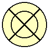
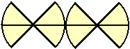

Antwoord op:
Tractatie Taart
 Als de taart in acht even grote stukken moet worden gedeeld
met slechts drie rechte sneden, dan doe je dit door de taart twee maal verticaal
te snijden in een '+' vorm op de bovenkant van de taart en de derde snede horizontaal
door het midden van de taart (als je van voren tegen de taart aankijkt, zie figuur
hier rechts). Het nadeel van deze oplossing is echter dat slechts vier stukken slagroom
en/of vruchtendecoratie hebben, terwijl de overige vier stukken slechts enkel uit
taartbodem bestaan...
Als de taart in acht even grote stukken moet worden gedeeld
met slechts drie rechte sneden, dan doe je dit door de taart twee maal verticaal
te snijden in een '+' vorm op de bovenkant van de taart en de derde snede horizontaal
door het midden van de taart (als je van voren tegen de taart aankijkt, zie figuur
hier rechts). Het nadeel van deze oplossing is echter dat slechts vier stukken slagroom
en/of vruchtendecoratie hebben, terwijl de overige vier stukken slechts enkel uit
taartbodem bestaan...
Als we echter willen zorgen dat er zowel op elk taartstuk slagroom
zit als bodem eronder, dan kan de taart als volgt worden gedeeld (van bovenaf gezien):

Merk hierbij op dat we ons dan niet hebben gehouden aan de
eis dat alle sneden recht moeten zijn, waardoor nog vele andere mogelijke
oplossingen denkbaar zijn, zoals de volgende (eveneens van bovenaf gezien):

Tot slot, een alternatieve oplossing waarbij de stukken
na de eerste twee sneden moeten worden verplaatst, maar waarbij we uiteindelijk
wel acht stukken van gelijke grootte en vorm overhouden! Hiertoe moet de taart
net als in enkele voorgaande oplossingen eerst twee maal (in '+'-vorm) worden
doorsneden. Leg de vier kwart punten vervolgens op een rij en maak de derde
doorsnijding als volgt:

![[TERUG]](left.gif) terug naar de puzzel
terug naar de puzzel
Copyright © 1996-2005. RJE-productions. All rights reserved.